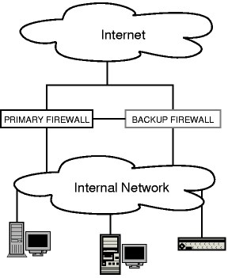

Soekris net4801 OpenBSD 4.0 CARP
Artículo traducido de: http://michiel.vanbaak.info/page/soekrisobsdcarp.htm
Este documento describe la instalación de un soekris net4801 con OpenBSD como firewall redundante. Primero describiré la instalación básica de OpenBSD en el net4801. Después explicaré como instalar las dos cajas como firewall redundante a prueba de errores. Este no es el único método para hacer este tipo de instalación, pero es el que nos ha funcionado.
Acerca de CARP y pfsync
En la mayoría de las redes, el firewall es un único punto de fallo. Cuando el firewall cae, los usuarios de dentro no pueden navegar por la web, el servidor web queda inaccesible para el resto del mundo, y el email queda parado. Desde la versión 3.5, OpenBSD ha introducido unos cuantos componentes que pueden ser usados para resolver este problema, colocando dos firewalls en paralelo. Todo tráfico pasa por el firewall primario; cuando éste falla el firewall de backup asume la identidad del firewall primario, y continua donde éste lo dejó. Las conexiones existentes son preservadas, y el trafico de la red continúa como si nada hubiera pasado.

Usaremos esto para proteger mejor nuesta plataforma de hosting.
Las herramientas
Los dos componentes principales que ofrece OpenBSD son CARP (the Common Address Redundancy Protocol), que permite a un host backup asumir la identidad del primero, y pfsync, que nos asegura que el estado del firewall está sincronizado para que el backup pueda retomar todo exactamente donde el el maestro dejó y no haya perdida de conexiones.
CARP
El Common Address Redundancy Protocol controla los fallos en la intersección de las capas 2 y 3 del modelo OSI (capa enlace y capa IP).*
El maestro de la dirección manda mensajes de aviso CARP via multicast usando el protocolo CARP (protocolo IP 112) de forma regular, y el host backup escucha estos avisos. Si los avisos se detienen, el host backup es advertido. La frecuencia de los avisos es configurable, y el host advertido más frecuentemente será el que se volverá master en caso de fallo.
pfsync
pfsync transfiere los mensajes de estado de inserciones, actualizaciones y borrados entre los firewalls. Cada firewall envia esos mensajes via multicast por la interfaz especificada, usando el protocolo PFSYNC (protocolo 240 IP). También escuchan en esa interfaz mensajes similares de otros firewalls y los importan en la tabla local de estado.
Para garantizar que pfsync conoce el volumen del paquete y la latencia requerida, la implementación inicial no proporciona autentificación. Un atacante con acceso a la subred local (capa enlace) usada para el tráfico pfsync puede fácilmente, añandir, cambiar o borrar estados de los firewalls. Es posible usar pfsync en una red "real", pero a causa de los riesgos de seguridad, es altamente recomendable que ésta sea una red dedicada y segura para pfsync. Esto es tan simple como usar un cable cruzado entre interfaces de los dos firewalls.
Instalar OpenBSD 4.0
Vaya a la documentalción de OpenBSD para saber como hacer esto.
Un par de cosas difieren de esa descripción. El soekris funciona con un disco CF. Asi que no necesita partición swap. El instalador no continuará si no tiene partición swap. Así que crearemos una con tamaño 1.
Además todo será montado como solo lectura, asi que necesitamos dividir nuestro disco en unas cuantas particiones. Esta configuración se usarán 3.
# disklabel wd0 # Inside MBR partition 3: type A6 start 63 size 2046177 # /dev/rwd0c: type: ESDI disk: ESDI/IDE disk label: SILICONSYSTEMS I flags: bytes/sector: 512 sectors/track: 63 tracks/cylinder: 16 sectors/cylinder: 1008 cylinders: 2030 total sectors: 2046240 rpm: 3600 interleave: 1 trackskew: 0 cylinderskew: 0 headswitch: 0 # microseconds track-to-track seek: 0 # microseconds drivedata: 0 16 partitions: # size offset fstype [fsize bsize cpg] a: 2016945 63 4.2BSD 2048 16384 328 # Cyl 0*- 2000 b: 1 2017008 swap # Cyl 2001 - 2001* c: 2046240 0 unused 0 0 # Cyl 0 - 2029 d: 29231 2017009 4.2BSD 2048 16384 28 # Cyl 2001*- 2029
La partición d se usa para guardar los archivos de configuración como hostname.if y pf.conf. Es usted libre de dejarlos en /etc pero así es como lo hicimos nosotros.
Cuando se le pregunte que sets instalar, teclee:
-* +bsd +base40.tgz +etc40.tgz done
Cuando todo haya sido instalado el instalador le pedirá que apague el sistema. No intente hacerse listo, hagale caso.
Configuración inicial del sistema
Arranque en single user mode. Cuando el prompt de boot de OpenBSD aparezca escriba boot -s. El sistema arrancará y preguntará por unsa shell. Pulse intro para aceptar el sh por defecto.
Ahora vamos a configurar el sistema de ficheros en memoria. Haremos esto porque la Compact Flash es lenta y fallará a menudo cuando haya muchas escrituras en ella. Primero monte el sistema de ficheros raiz y cree el raiz del sistema de ficheros en memoria:
# mount -o rw / # mkdir /mfs
Ahora modifique /etc/rc para configurar y llenar /mfs. Añadiremos las siguientes lineas después de rm -f /flashboot. La linea 203 en la instalación por defecto de 4.0.
# mfs related stuff echo 'mfs: mounting /mfs...' mount_mfs -s 16384 /dev/wd0b /mfs mkdir -p /mfs/var/run mkdir -p /mfs/var/tmp chmod 1777 /mfs/var/tmp cp -Rp /var/log.template /mfs/var/log cp -Rp /var/spool/mqueue /mfs/mqueue cp -Rp /var/spool/clientmqueue /mfs/clientmqueue cp -Rp /var/mail.template /mfs/mail
Edite /etc/mail/sendmail.cf y /etc/mail/submit.cf y cambie las entradas para clientmqueue y mqueue para que apunten a /mfs/{clientmqueue,mqueue}
Ahora moveremos algunos directorios y crearemos enlaces simbólicos a /mfs.
# mv /var/log /var/log.template # mv /var/mail /var/mail.template # rm -rf /tmp # rm -rf /var/tmp # rm -rf /var/run # ln -s /mfs/var/tmp /tmp # ln -s /mfs/var/tmp /var/tmp # ln -s /mfs/var/log /var/log # ln -s /mfs/var/run /var/run # ln -s /mfs/mail /var/mail
Ahora estamos preparados para reiniciar nuestro sistema.
Una vez que el sistema arranque y todo funcione bien podemos modificar /etc/fstab para montar el sistema de ficheros raiz en modo solo lectura:
/dev/wd0a / ffs ro,noatime 1 1
La proxima vez que arranque el sistema, todo sera sólo lectura excepto /mfs
¿Recuerda la partición d? Se usará para los archivos de configuración que cambien a menudo. Esta pequeña partición se montará como lectura escritura.
# mkdir /mnt/vanbaak # mount /dev/wd0d /mnt/vanbaak # mkdir /mnt/vanbaak/confs # mv /etc/hostname.* /mnt/vanbaak/confs/ # mv /etc/pf.conf /mnt/vanbaak/confs/ # cd /etc # ln -s /mnt/vanbaak/confs/hostname.* # ln -s /mnt/vanbaak/confs/pf.conf
Ahora edite /etc/fstab y añada este punto de montaje. El archivo debería parecerse a esto:
/dev/wd0a / ffs ro,noatime 1 1 /dev/wd0d /mnt/vanbaak ffs rw,nodev,nosuid,noatime 1 2
Reinicie una vez más y su sistema estará listo para ser configurado como un firewall redundante.
Un df -h del sistema instalado debería parecerse a esto:
# df -h Filesystem Size Used Avail Capacity Mounted on /dev/wd0a 967M 171M 748M 19% / /dev/wd0d 13.8M 16.0K 13.1M 0% /mnt/vanbaak mfs:19171 7.7M 150K 7.2M 2% /mfs
Configurar CARP
Antes de que use CARP, debemos habilitarlo en /etc/sysctl.conf. Añada las siguientes lineas:
net.inet.carp.allow=1 net.inet.carp.preempt=1
Ahora puede reiniciar para activarlo o ejecutar los siguientes comandos:
# sysctl -w net.inet.carp.allow=1 # sysctl -w net.inet.carp.preempt=1
Ahora necesitamos reescribir la configuración de la red. El soekris viene con 3 interfaces: sis0, sis1 y sis2.
- sis0 será conectada al mundo exterior.
- sis1 será conectada a la red interna.
- sis2 será usada para compartir la información de estado. Vea Configurar pfsync.
Las ips virtuales serán puestas por CARP. Las dos, la parte interna y la parte externa necesitan una ip virtual asi que configuraremos dos interfaces CARP.
- carp1 en el exterior usando sis0 como interfaz física.
- carp2 en el interior usando sis1 como interfaz física.
Para crear una interfaz carp puede usar ifconfig para configurarla en un sistema arrancado. Después veremos que ficheros debemos crear para configurar CARP durante el arranque del sistema.
Una interfaz CARP se crea de la siguiente manera:
# ifconfig sis0 ip.address netmask some.mask # ifconfig carp1 create # ifconfig carp1 vhid 1 carpdev sis0 pass somepass virtual.ip.address netmask some.mask
En el segundo, el host backup, los comandos serían:
# ifconfig sis0 ip.address+1 netmask some.mask # ifconfig carp1 create # ifconfig carp1 vhid 1 carpdev sis0 pass somepass advskew 100 virtual.ip.address netmask some.mask
La palabra clave es advskew. Cuanto más alto sea, menor prioridad tiene el firewall. La maquina con el advskew mas bajo será el firewall maestro.
Para nuestra configuración tomaré las siguientes direcciones ip. Notese que son usadas para pruebas. Reemplace la información de las ips con su información real.
+----| WAN/Internet |----+
| |
sis0| |sis0
+------------+ +------------+
| soekris001 |-sis2--------sis2-| soekris002 |
+------------+ +------------+
sis1| |sis1
| |
---+-------Shared LAN-------+---
Soekris001 es el firewall maestro.
Soekris002 es el firewall de backup a prueba de fallos.
- soekris001 sis0: 192.168.2.14
- soekris001 sis1: 10.0.0.14
- soekris001 sis2: 172.16.0.14
- soekris002 sis0: 192.168.2.15
- soekris002 sis1: 10.0.0.15
- soekris002 sis2: 172.16.0.15
- Ip compartida externa: 192.168.2.13
- Ip compartida interna: 10.0.0.13
Configuración en el soekris001:
# ifconfig sis0 192.168.2.14 netmask 255.255.255.0 up # ifconfig sis1 10.0.0.14 netmask 255.255.255.0 up # ifconfig sis2 172.14.0.14 netmask 255.255.255.0 up # ifconfig carp1 create # ifconfig carp1 vhid 1 carpdev sis0 pass somethingsecret 192.168.2.13 netmask 255.255.255.0 # ifconfig carp2 create # ifconfig carp2 vhid 2 carpdev sis1 pass somethingother 10.0.0.13 netmask 255.255.255.0
Asegurese de poner lo siguiente en la parte superior de su /etc/pf.conf.
pass out on { sis0, sis1 } proto carp keep state
Configuración en el soekris002:
# ifconfig sis0 192.168.2.15 netmask 255.255.255.0 up # ifconfig sis1 10.0.0.15 netmask 255.255.255.0 up # ifconfig sis2 172.14.0.15 netmask 255.255.255.0 up # ifconfig carp1 create # ifconfig carp1 vhid 1 carpdev sis0 pass somethingsecret advskew 100 192.168.2.13 netmask 255.255.255.0 # ifconfig carp2 create # ifconfig carp2 vhid 2 carpdev sis1 pass somethingother advskew 100 10.0.0.13 netmask 255.255.255.0
Asegurese de poner lo siguiente en la parte superior de su /etc/pf.conf.
Todo debería funcionar ahora. Haga ssh a 192.168.2.13 y ejecute hostname. Debería mostrar soekris001. Si desconecta la corriente y hace ssh a 192.168.2.13 otra vez deberia mostrar soekris002.
Para mantener esta configuración siempre que la maquine se inicie, necesitamos crear/editar algunos ficheros.
- hostname.sis0
- hostname.sis1
- hostnmae.sis2
- hostname.carp1
- hostname.carp2
En el soekris001:
# cat /etc/hostname.sis0 inet 192.168.2.14 255.255.255.0 192.168.2.255 media 100baseTX mediaopt full-duplex description External # cat /etc/hostname.sis1 inet 10.0.0.14 255.255.255.0 192.168.2.255 media 100baseTX mediaopt full-duplex description Internal # cat /etc/hostname.sis2 inet 172.14.0.14 255.255.255.0 192.168.2.255 media 100baseTX mediaopt full-duplex description pfsync # cat /etc/hostname.carp1 inet 192.168.2.13 255.255.255.0 192.168.2.255 vhid 1 carpdev sis0 pass somethingsecret # cat /etc/hostname.carp2 inet 10.0.0.13 255.255.255.0 10.0.0.255 vhid 2 carpdev sis1 pass somethingother
En el soekris002:
# cat /etc/hostname.sis0 inet 192.168.2.15 255.255.255.0 192.168.2.255 media 100baseTX mediaopt full-duplex description External # cat /etc/hostname.sis1 inet 10.0.0.15 255.255.255.0 192.168.2.255 media 100baseTX mediaopt full-duplex description Internal # cat /etc/hostname.sis2 inet 172.14.0.15 255.255.255.0 192.168.2.255 media 100baseTX mediaopt full-duplex description pfsync # cat /etc/hostname.carp1 inet 192.168.2.13 255.255.255.0 192.168.2.255 vhid 1 carpdev sis0 pass somethingsecret advskew 100 # cat /etc/hostname.carp2 inet 10.0.0.13 255.255.255.0 10.0.0.255 vhid 2 carpdev sis1 pass somethingother advskew 100
Ahora el soekris002 tomará el control si el soekris001 muere. Lo único molesto es que las conexiones establecidas se perderán. Para ello viene pfsync al rescate.
Configurar pfsync
pfsync syncroniza los estados de pf entre las dos maquinas soekris. De esta manera las conexiones establecidas continuarán en caso de fallo.
Vamos a usar sis2 para esto. Esta interfaz ya tiene una dirección IP. Todo lo que debemos hacer es crear la interfaz pfsync0 y adjuntarla a sis2.
En las dos máquinas:
ifconfig pfsync0 syncdev sis2
Para establecer esta configuración cuando la maquina arranque, deberemos crear el fichero /etc/hostname.pfsync0:
# cat /etc/hostname.pfsync0 up syncdev sis2
Asegurese de poner esto en la parte superior de su /etc/pf.conf.
pass on sis2 proto pfsync
Consejos /etc/pf.conf
Recuerde: el filtrado tiene lugar en la interfaz física, no en la interfaz virtual carpX. De todas formas la interfaz virtual se puede usar combinada con direcciones:
pass in on sis0 from any to carp1 port ssh
Reemplazando sis0 por carp1 no funcionará.
Referencias
Visite las siguientes direcciones para más información:
Copyright (c) 2006 Michiel van Baak.
Permission is granted to copy, distribute and/or modify this document under the terms of the GNU Free Documentation License, Version 1.2 or any later version published by the Free Software Foundation; with no Invariant Sections, no Front-Cover Texts, and no Back-Cover Texts.
A copy of the license is included in the section entitled "GNU Free Documentation License".
Acerca de...
 Pequeño blog con artículos técnicos sobre sistemas y software libre de las cosas que voy haciendo. Así como traducciones
de artículos que me han sido útiles.
Pequeño blog con artículos técnicos sobre sistemas y software libre de las cosas que voy haciendo. Así como traducciones
de artículos que me han sido útiles.